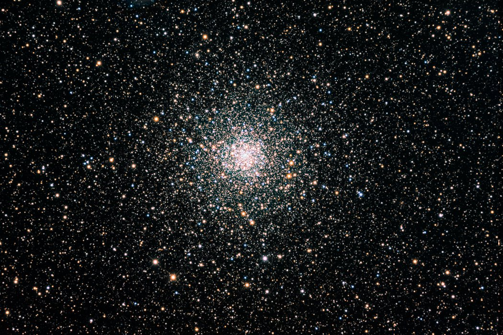
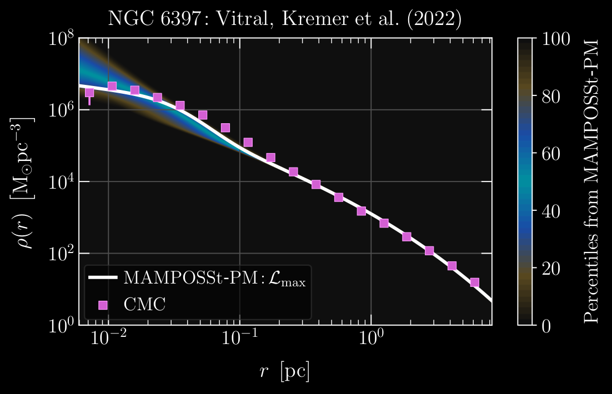
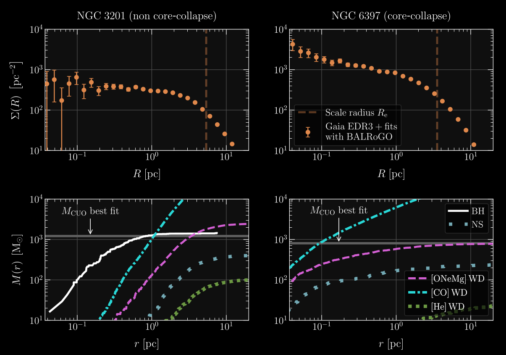
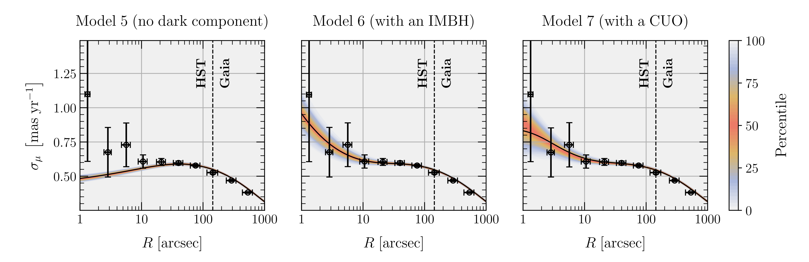

Globular clusters as dynamically active environments

Globular cluster NGC 6397.
Image credits: D. Verschatse (Antilhue Observatory, Chile).
Globular clusters (GCs) are among the most dynamically active
environments in the Universe. These roughly spherical, dense
clusters are composed of stars tightly packed, with the densest GCs
having inner densities as much as a million times greater than
what is observed in our solar neighborhood. In such dense environments,
stellar evolution is shaped by the internal dynamics by means of
phenomena such as runaway mergers, as well as mass segregation: a
consequence of dynamical friction and energy equipartition that leads
more massive stars to locate closer to the cluster’s center, while less
massive ones are moved towards the outskirts. This makes GCs excellent
laboratories to study compact objects – including white dwarfs, neutron
stars, stellar-mass black holes, and intermediate-mass black holes (IMBHs).
Mass-modeling

Comparison of mass density profiles: The white line depicts the
best fit of observed data by MAMPOSSt-PM, while the magenta squares show the
respective values from the CMC model of NGC 6397. The remarkable match between
the fits from observed data and simulations attest the robustness of both
mass-modeling tools.
Image credits: Data from
Vitral et al. 2022.
Two important questions that arise in such dense systems are
“How is their mass distributed?” and “Which type of stars
(or compact objects) compose the bulk of the cluster’s mass at different radii?”.
In addition, many works have suggested that inner mass excesses in GCs could
indicate the presence of IMBHs, a long sought missing link of black hole physics.
In order to address those questions, I use the Jeans equation
(in particular, the MAMPOSSt-PM modeling code) to constrain
the the shape of the GC mass and velocity anisotropy profiles:
$$\frac{{\rm d}\left (\rho\sigma_r^2\right)}{{\rm d}r} + 2\,\frac{\beta(r)}{
r}\,\rho(r)\sigma_r^2(r) = -\rho(r) \frac{G\,M(r)}{r^2} \ .$$
The Jeans equation does not necessarily tell, however, the stellar composition
of the mass profile. In other words, to evaluate if the measured mass is
composed of luminous stars, black holes, white dwarfs or neutron stars, we
require other tools. Hence, with my collaborators, we use evolutionary
Monte Carlo numerical simulations of GCs from the
CMC catalog,
matched to the Milky Way clusters. By finding good matches, we are able to
fully constrain the shape and composition of the mass profile of the analyzed GC.
One of the important results of my work was to show that the
inner mass excess in some GCs is extended, and not point-like, as
expected in the case of an IMBH. This points to the presence of an
inner sub-cluster of faint compact objects.
The role of core-collapse
One of the most interesting phenomena related to GCs is the process
of core-collapse, which is intrinsically related to the exchange of
energy due to dynamical interactions in the cluster. In self-gravitating
systems like GCs, the virial theorem reveals that the centers of GCs
have a negative heat capacity, i.e. an energy input in the system
triggers a decrease of the kinetic energy, which can be regarded as
the system’s ‘temperature’. Such a counterintuitive relation tends
to evolve in a typical cluster’s interior,
as it exchanges energy with its outer regions, naturally from the
former to the latter. This process leads inevitably to the ‘collapse’ of
stars to the cluster’s inner-most regions.
Many works argue that core-collapse can be halted due to
a process called binary burning, where dynamical interactions
of binaries with other stars cause tight (‘hard’) binaries to harden while the
third star (not necessarily the original one) is kicked out at a higher
speed than the initial third star came in with. This
process effectively pumps energy to the cluster’s inner regions, thus
preventing core-collapse from continuing indefinitely.
Black holes in GCs form and sink early (on roughly 100 Myr time-scales)
to the cluster’s center due to a combination of their high masses
and energy equipartition. Once in the inner regions of GCs, black
holes dynamically interact with one another and with luminous stars.
Those living in hard binaries thus provide a similar energy exchange
towards the cluster’s interior as in the classical stellar binary-burning
scenario, but amplified due to the relative high masses of black holes
compared to stars. This new theoretical comprehension of the physics governing
GCs suggests that the ones without the characteristic inner cuspy
structure of core-collapse probably harbour a segregated black hole
population, responsible for the delay of core-collapse. This phenomenon has
been referred to as black hole binary burning.

The effects of core-collapse: Comparison between NGC 3201 (left),
a cluster which has not yet experienced core-collapse, and NGC 6397 (right),
a classic example of a cluster in a post core-collapse state. The upper panels
display the surface density profiles of both clusters, from Gaia EDR3, using the
same range of absolute magnitudes. The lower panels show the contribution in mass
from each compact object (remnant) as a function of the 3D distance from the cluster’s centre,
obtained from CMC models from Kremer et al.
(2019,
2021),
in addition to a grey line depicting our best MAMPOSSt-PM mass fit of a subcluster of
unseen objects (i.e. MCUO). This illustrates that a collapsed population of
stellar-mass black holes is a plausible explanation to the delay of core-collapse in
globular clusters.
The plot uses data from
Vitral et al. 2022.
Ultimately (in roughly 10 Gyr timescales), the clustered black hole population
becomes negligible by being ejected as the result of several dynamical interactions,
allowing other luminous stellar components to sink, as well
as less massive compact objects such as neutron stars and white dwarfs. When
these more luminous components collapse in the centre, forming the characteristic
core-collapse inner cusp, stellar and white dwarf binary-burning
effectively halts further shrinking of the core.
In
Vitral et al. 2022,
we have confirmed that the core-collapsed GC NGC 6397 harbors hundreds of segregated massive white dwarfs
(in agreement with what has been proposed by
Rui et al. 2021
and
Kremer et al. 2021
with simulations),
by fitting data from the Hubble Space Telescope and the Gaia astrometric mission, and then matching
with Monte Carlo models from the CMC catalog. In addition, by using the same methods,
we constrained the
black hole population in the non core-collapsed GC NGC 3201 to roughly a hundred stellar-mass
black holes, concentrated in a region of roughly 0.1 parsecs.
Intermediate-mass black holes
In
Vitral et al. 2023,
we performed mass-anisotropy modeling of the globular cluster Messier 4 (M4),
the closest of its kind to our Sun. For the first time, we fitted its 3D velocity anisotropy profile
and showed it to be isotropic at the center, while tangential at the outskirts.
With 2D proper motion data, we were then able to solve the mass-anisotropy degeneracy,
and robustly fit the central mass profile of this cluster. We measured a dark central
mass of roughly 800 ± 300 M⊙ , but it was not possible to distinguish between a point-like
source, such as an intermediate-mass black hole (IMBH), and a dark population of stellar
remnants of extent ≈ 0.016 pc ≃ 3300 au .

Display of the proper motion velocity dispersion as a function of the projected
radius of M4, for models with no dark component (left), with an IMBH (middle),
and with central unresolved objects (right). The coloured regions represent the
percentiles from the MCMC chains of our fit, while the continuous black solid
line shows the maximum likelihood solution from MAMPOSST-PM. The black dashed
line depicts the region separating the HST and Gaia stars used in our modelling.
The black circles and vertical error bars feature the measured proper motion
dispersion and respective 1σ uncertainty, calculated with the recipe from
van der Marel & Anderson (2010, appendix A), in 10 logarithmically spaced radial bins.
The horizontal error bars considered the 1σ radial quantization noise.
The plot is originally from
Vitral et al. 2023
and highlights the need for a very concentrated central dark mass in M4.
When removing a high-velocity star from the cluster center, the same mass excess is found,
but more extended (∼0.034 pc ≈ 7000 au ). Using Monte Carlo N-body models of M4 to interpret
the second outcome, we still found that our excess mass is not sufficiently extended to be
confidently associated with a dark population of remnants. Although not a definitive proof
of the existence of an IMBH (for instance, data incompleteness in the center could still affect
our conclusions), this result is one of the best clues to the existence of IMBHs in globular
clusters in our Milky Way.